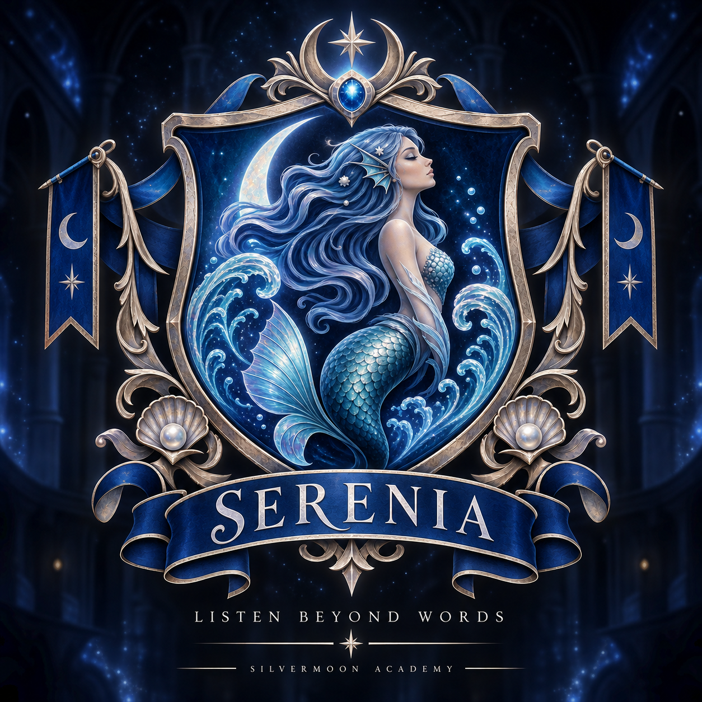

Serenia
Legacy of Aquillia
Serenia welcomes those who see what others often overlook. Its students are known for their empathy, intuition and imagination, valuing understanding before judgement and compassion before conflict.
“Listen Beyond Words.”